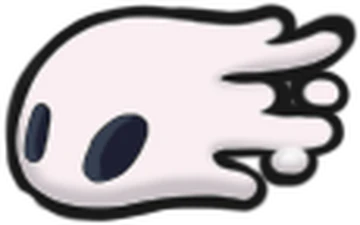

Objetos
Objetos varios
| Nombre | Descripción | Ubicación / Imagen |
|---|---|---|
Llave del comerciante | Pequeña llave de latón hecha a semejanza de un comerciante, dándosela a Sly desbloquea más objetos de su tienda. Se encuentra en Cumbre de Cristal, en la sala a la izquierda del banco donde está el Guardián de cristal. |  |
Fragmentos de vasija
| Descripción | Ubicación / Imagen |
|---|---|
| Las vasijas son útiles para almacenar alma sobrante cuando tu vasija principal esté llena, cuando gastes alma y se vacíe, el alma sobrante de las otras vasijas se desplazara a la principal. Las vasijas están esparcidas por fragmentos en todo el mapa, necesitas recolectar 3 de ellos para formar una sola y en total puedes tener hasta 3 vasijas |   |
Fragmento N°1Puedes encontrar uno de los fragmentos en la siguiente zona del mapa de sendero verde, hay una entrada en la parte de arriba despúes de terminar la zona de plataformeo, ésta entrada te llevara a un pasillo en dónde estará el fragmento. Requiere: Garra de Mantis. | .jpg) .jpg) |
Fragmento N°2Este fragmento se encuentra en cruces olvidados, para llegar a él, primero debes desbloquear el elevador por medio de ciudad de lágrimas y despúes avanzar hacia la izquierda, en alguna zona de por abajo encontraras este fragmento |
.jpg) .jpg) | Fragmento N°3Éste fragmento se encuentra en ésta sección de estación del rey. Al llegar te enfrentaras a algunos enemigos, después de vencerlos encontraras el fragmento hacia el lado derecho de la habitación |
  |
Fragmento N°4Éste otro fragmento se encuentra en el nido profundo en ésta ubicación de aquí, tendrás que superar un pequeño circuito algo complicado. Al final de éste encontrarás el fragmento |
 |
Fragmento N°5El siguiente fragmento se encuentra en el nido de ciervos, una zona sin mapa a la que solo se puede acceder cuando ya has abierto todas las estaciones de ciervo disponibles en el juego, cuando lo hagas, el viejo ciervo te dirá que recuerda el lugar donde estaba y se desbloqueará la opción de ir ahí |
 |
Fragmento N°6El siguiente te lo otorgará la vidente cuando hayas reunido 700 de esencia, una vez alcanzada la cifra, visítala y será tuyo, tan simple cómo eso |
 |
Fragmento N°7El siguiente lo conseguirás en ésta ubicación de cuenca antigua, cerca de la entrada encontrarás una fuente con una estatua que se asemeja al rey pálido, la cuál te pedirá geo,l una vez que hayas depositado en la fuente la carísima cantidad de 3,000 geo, te dará el fragmento |
  |
Fragmento N°8-9Los dos últimos fragmentos te los venderá Sly en su tienda, el primero lo podrás encontrar desde el comienzo y te lo venderá por 550 de geo. El segundo se desbloqueará solamente después de haberle entregado la llave del comerciante y entonces te lo venderá por 900 geo |
 |
Fragmentos de Máscaras
| Descripción | Ubicación / Imagen |
|---|---|
| Las máscaras son tu salud dentro del juego, cuando se te acaba la última pierdes. Al iniciar el juego comienzas tan solo con 5, pero puedes conseguir mas reuniendo fragmentos de máscara hasta completar una entera. Puedes conseguir un total de 4 máscaras extra, lo que significa que en total tienes 16 fragmentos que recolectar. | 
 |
Fragmento N°1El primer fragmento se encuentra en ésta sección de cruces olvidados. Despúes de pasar una zona de pínchos, en la que debes tener cuidado y siempre mirar abajo, llegaras con un jefe llamado "Mawlek Incubadora" al que deberás vencer para conseguir el fragmento |

 |
Fragmento N°2El segundo fragmento lo puedes encontrar en cruces olvidados justo en ésta parte del mapa, necesitas garra de mantis para poder subir, posteriormente deberás atravesar una pequeña secuencia de obstáculos y entonces conseguirás el fragmento. |

 |
Fragmento N°3El tercer fragmento está también en cruces olvidados, para conseguirlo, necesitas rescatar a 5 larvas cautivas, luego ir con el padre larva y entonces el mismo te dará el fragmento |
 |
Fragmento N°4El cuarto lo tendremos en estación de la reina en ésta ubicación y para llegar a él tendrás que completar un pequeño circuito saltando en las paredes con las garras de mantis, y entonces llegarás a él |

 |
Fragmento N°5El quinto fragmento estará en la casa de Bretta en bocasucia, para poder entrar, hay que encontraral priemro en páramos fúngicos, ésta es su ubicación, para llegar a ella dedes encontrar la entrada secreta a la derecha de la estatua donde encuentras el amuleto "maestro de la esmbestidas" luego pasar por un circuito de obstaculos con la garra de mantis y hablar con ella, después de rescatarla regresa a bocasucia y la puerta de la casita se abrirá, dentro encontrarás el fragmento |

 |
Fragmento N°6El sexto fragmento estará en ésta ubicación de canales reales, no hay dificultades, es tan simple cómo solamente ir y tomarlo |

 |
Fragmento N°7El séptimo se encuentra en el santuario de piedra en Sendero verde, dentro del santuario hay un boss onírico, pero no es necesario vencerlo para conseguir el fragmento, pero algo que definitivamente si necesitarás es la linterna de lumélula que vende Sly en su tienda por 1,800 Geo, pues dentro del santuario está muy oscuro y lleno de pinchos, por lo que si entras sin ella, te será muy complicado llegar hasta el fragmento |

 |
Fragmento N°8El fragmento número ocho está en ésta ubicación de nido profundo, pero no puedes llegar a él desde el propio nido profundo, sino que tienes que bajar a través de ésta zona de páramos fúngicos y llegar hasta el fondo, una vez ahí, tendrás el fragmento justo en frente |

 |
Fragmento N°9El fragmento número nueve está en cumbre de cristal, para conseguirlo tienes que vencer al guardián furioso después de ya haberlo derrotado en su fase de Guardián de cristal estará en ésta ubicación de aquí y para poder llegar a él necesitarás las alas de monarca |

 |
Fragmento N°10El décimo fragmento lo encontrarás en ésta ubicación de la colmena, lo verás del otro lado de un muro que aparenta ser destructible pero no lo es, para entrar, debes provocar a una de las abejas grandes para que choca con la pared y la destruya por ti y así podrás conseguirlo |

 |
Fragmento N°11El fragmento número 11 te lo dará la vidente cuando hayas reunido la cantidad de 1,500 esecnias. Una vez hecho, visítala y se te otorgará el fragmento |

 |
Fragmento N°12El fragmento número 12 te lo dará la doliente gris después de completar la misión secundaria que te encomendará. Ésta misión consiste en llevar la "flor delicada" hasta la otra punta del mapa sin recibir absolutamente nada de daño ni usar los ciervo caminos, pero no te preocupes, puedes intentar la misión las veces que quieras. Un consejo para completar la misión más fácilmente, es trazar una ruta fácil y eliminar a todos los enemigos que haya en ella sin sentarte en ningún banco, pues si lo haces, los enemigos reaparecerán, una vez hecho comienza el recorrido (vas a sufrir igual) |


 |
Fragmento N°13 - 16Los últimos 4 fragmentos restantes se los podrás comprar a Sly en su tienda, dos antes de entregarle la Llave del comerciante, y los otros dos después de habersela entregado. |
 |
Amuletos
| Nombre | Descripción | Ubicación / Imagen |
|---|---|---|
Furia de los caídos.jpg) | Este es el primer amuleto que puedes conseguir al iniciar el juego, se encuentra en éste lugar de paso del rey. este amuleto aumenta el daño del aguijón en un enorme 75% cuando solo te queda una máscara | .jpg)  |
Brújula caprichosa | Éste amuleto se consigue muy fácil, pues lo único que debes hacer es encontrar a Cornifer dentro de cruces olvidados, comprarle un mapa y luego subir a bocasucia, al regresar, su tienda estará abierta dónde te atenderá Iselda; su esposa, ahí podrás comprar éste amuleto. Su función es mostrar tu posición exacta en el mapa en tiempo real |  |
Enjambre recolector | Con éste amuleto la historia es muy similar. Debes encontrar a Sly en ésta sección de cruces olvidados y hablar con él para hacerlo salir de su trance, luego de eso regresará a su tienda en bocasucia dónde podrás comprarle el amuleto. Éste amuleto despliega unos pequeños bichos voladores que llevaran hacia a ti todo el geo tirado que haya cerca, perfecto si no te gusta desperdiciar ni uno solo |   |
Habilidades
| Nombre | Descripción | Ubicación / Imagen |
|---|---|---|
| Capa de polilla | Capa de polilla sirve para dar Dashes hacia adelante o atrás. Se consigue en ésta habitación de Sendero Verde después de derrotar a Hornet. |  |
| Espíritu Vengativo | El espíritu vengativo es un ataque lineal de largo alcance, se consigue al hablar con el chamán dentro del montículo ancestral. Hace 15 puntos de daño |  |
Mejoras del Aguijón
| Nombre | Descripción | Ubicación / Imagen |
|---|---|---|
Forjaguijones | Para que tu aguijón haga mucho más daño, necesitas mejorarlo, para eso solo debes de encontrar al forjaaguijones en éste lugar de ciudad de lágrimas hasta abajo a la izquierda. |  |
Aguijón afilado | Para ésta primera mejora, lo único que necesitas es pagarle 250 geo al forjaguijones. Pasará de 5 a 9 puntos de daño. | |
Aguijón estilizado | Para ésta mejora necesitaras 800 de geo y 1 mineral pálido, puedes encontrar uno de éstos en ésta zona de cuenca antigua. El daño del aguijón aumentará a 13 puntos |   |